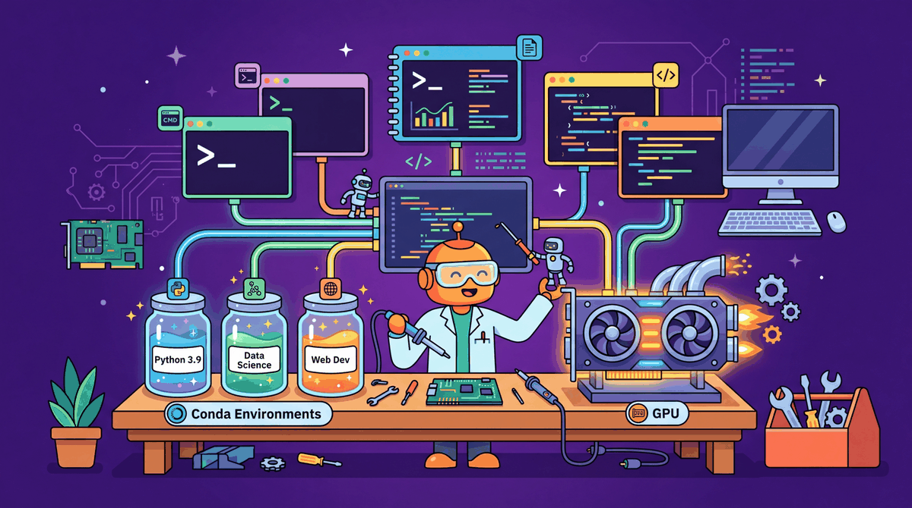

Setting up a working environment for LLM experimentation involves several layers: hardware, operating system drivers, Python itself, and the constellation of ML libraries. This appendix walks through each layer from the bottom up, with instructions covering both local machines (Linux, macOS, Windows with WSL) and cloud platforms (AWS, GCP, Azure, and hosted notebook services like Colab and Kaggle). Follow the sections that apply to your situation.
A correctly configured environment is not glamorous, but a misconfigured one costs far more time than it saves by improvising. CUDA version mismatches, incompatible library combinations, and missing drivers are among the most common reasons practitioners lose hours before writing a single line of model code. The investment in reading this appendix once pays dividends throughout the rest of the book.
This appendix is essential for readers setting up a new machine or cloud instance. It is also useful for debugging mysterious failures in code that should work. Experienced ML engineers who already have a functional environment can skip to Section I.6 to verify their setup meets the requirements for this course.
Once your environment is configured, the Python libraries it hosts are covered in Appendix H (Python Libraries and Patterns for LLM Development). Hardware selection decisions are informed by Appendix D (GPU Hardware and Cloud Compute), which covers GPU specs and cloud pricing. Fine-tuning workflows that have specific environment requirements are in Chapter 18 and Chapter 19.
No prior LLM knowledge is required for this appendix. Basic command-line familiarity (navigating directories, running commands in a terminal) is assumed throughout. For cloud-specific sections, you will need an account on the relevant platform. Section I.3 assumes you understand what a virtual environment is; if not, read Appendix H Section H.2 first.
Work through this appendix before starting Chapter 00 if you do not already have a working ML environment. If you encounter import errors, CUDA errors, or version conflicts while following any hands-on chapter, return here to verify your setup. For teams setting up shared infrastructure, Section I.5 (Cloud Options) and Section I.6 (Verifying Your Setup) provide a useful checklist. If you are exclusively using API-based LLM access without local GPU work, you can reduce this appendix to Sections D.3 and D.4 only.